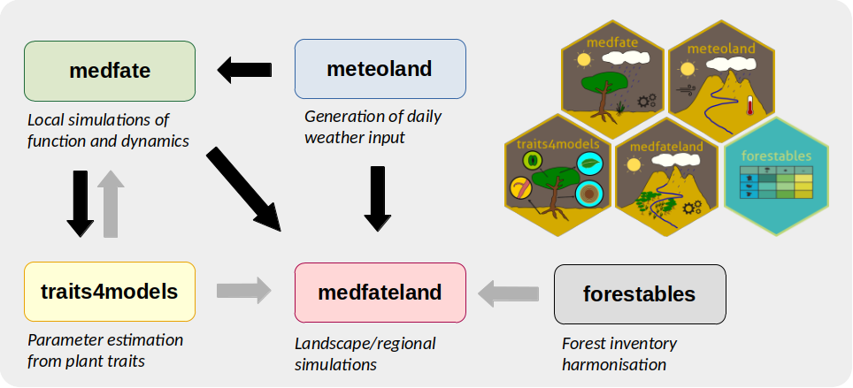

Introduction
The R package medfateland has been designed to extend the capabilities of package medfate in a spatially-explicit context. It allows running the stand-level models available in medfate on points and cells within landscape or region, including the possibility of parallelization. Additionally, medfateland allows considering seed dispersal and lateral water transfer processes in forested watersheds. Hence, medfateland can be used as a tool for eco-hydrological applications.
Package installation
Since both packages evolve together, installing medfateland normally requires an up-to-date version of medfate.
The package is not available from CRAN because it is still under active development. Beta versions of package medfateland can be installed from GitHub as follows:
remotes::install_github("emf-creaf/medfateland")Documentation
A number of vignettes illustrate how to initialize inputs and run simulation models in medfateland. These can be found at the package website.
The user is also advised to read articles included in the website of package medfate.
A complete documentation of both packages, including a reference book, can be found at https://emf-creaf.github.io/medfatebook/index.html.
Companion R packages
The modelling tools included in medfate and medfateland are complemented with two companion packages:
- Package meteoland allows generating daily weather input for simulation models in medfate and medfateland.
- Package traits4models provides functions to help creating species parameter inputs for process-based models such as those in for medfate and medfateland functions [under development].
The relationships between the four packages are illustrated in the figure below, where black arrows indicate package dependencies and gray arrows indicate model parameter provision.

Authorship
The set of R packages are developed and maintained by the Ecosystem Modelling Facility unit at CREAF (in Spain), in close collaboration with researchers from URFM-INRAE (in France) and CTFC (in Spain).